I'm still a bit shocked about what had happend during the past few days leading up to the event, with the most significant being that my phone was lost on my way home last 14 Sep. but thanks to my cos fwens, I can atleast have some photos to share!!
also, I would like to thank some of the CosMarias in advance for accompanying me throughout the journey as we plow through the Balanga Leg Special even with turbulence on our shoulders!! they are exactly what I've been looking for as a CosMaria -- being able to support their fellows and others in times of need and uncertainties. I couldn't have been here without their support and worry, and I'm committed to return the favor tenfold; more on that as you read the article!!
for a quick rundown of what just happend before the Balanga Leg Special (aka Gakuen-Sai 2024), you can refer to the following vods below:
despite the many hurdles that had inflicted, we carried on our promise to deliver the Tour and have attended Gakuen-Sai 2024!! I may not have my phone on hand anymore, but I do have my laptop to make up for it!!
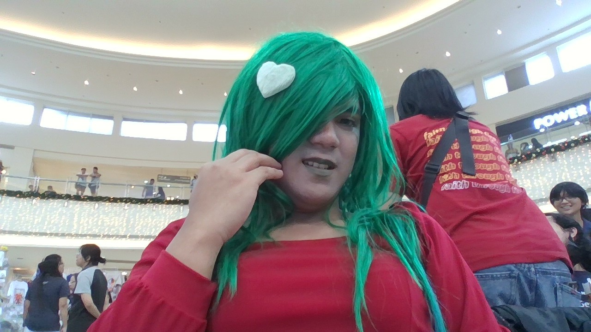 — one of the three selfies taken from the laptop!! (with my first hairclip)
there was an upcoming Singing Competition when I arrived (at around 2-3pm PHT) and I could see some familiar faces straight-up -- especially Shi-Shi!! you'll be hearing more of her more often as you progress through this blog.
the Singing Competition, if I'm being half-honest, were necessarily not that half-bad either!! I'm a bit concerned about the impacts from both parties since the first half was kinda meh.. that's according to the audiences as I've observed.
regardless, as the first competition progresses, it became more livelier than ever; with more contestants aiming to hype up the crowd!! somehow I felt like cheering from my seat for the constestants regardless of their performance as sort of a confidence boost -- even for a lil bit~
the Cosplay Competition is where they actually took the cake for being this awesome -- most of the performances I've seen out of everything had me jumping from my seat -- even tho I was actually standing from a booth. (I was at the Cosplayer Avenue with other guest cosers when the competition happend cuz I was demoing Shi-Shi how I usually work on websites like this -- signifying the continuation of our devtalks~)
in some cases, I can see some familiar face or two onstage -- most notably, Chowji!! (for more details, check out this article.)
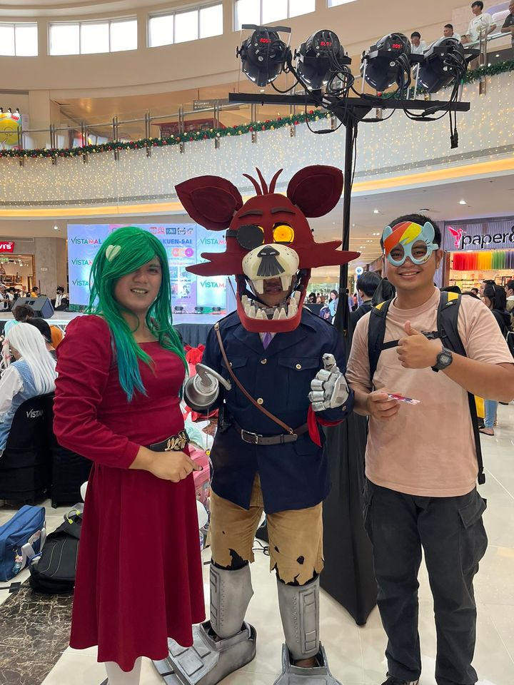
during the Singing Competition, I actually wandered around the booths to see if there are any booths of interest that I can make an article about -- and for some reason, I rekindled with Haryu again!! what a small world despite that I moved to Pampanga..
for those uninitiated, she was one of the people I met back at BACon (Bataan Anime Convention) 2024; which she actually had her own booth when I dropped by!! for more reference, refer to this article.
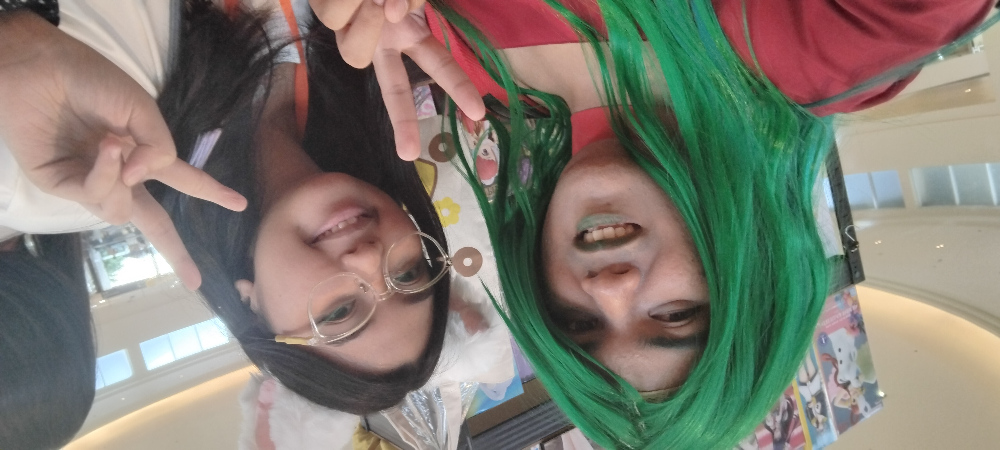 — Haryu and I back at BACon 2024
in addition, I also went to other booths and mingled with some of them -- whilst also giving them some cards and A5 prints!! some of them were even generous to even provide me with some of their items in exchange!! more on that later.
I've made the following announce for the event!! it may seem a bit simple but that's how I got with.. (also made some several adjustments to the graphic for some odd reason lmao)
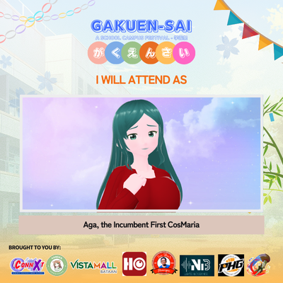
also, I recently participated in the Confessions and Shout-Outs where I send out my confession as displayed below:
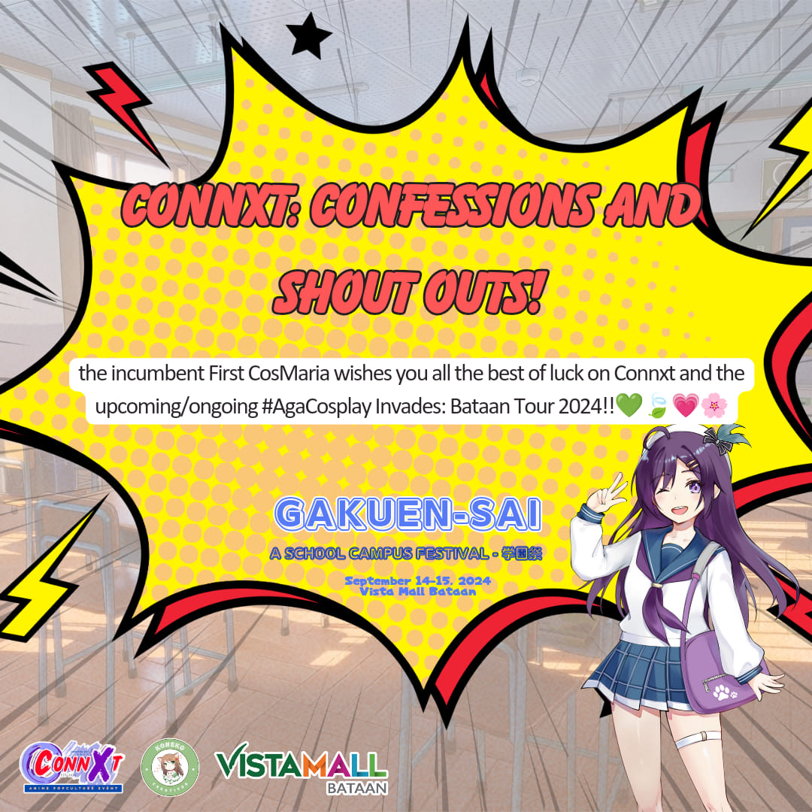
primary reaction cuz this somehow blew up: Eri??!?!?!
in a nutshell, they're the same items that were featured during MalCon 2024 Bataan Leg, but with few differences.
have a look at the following items below as we discuss them in full detail:
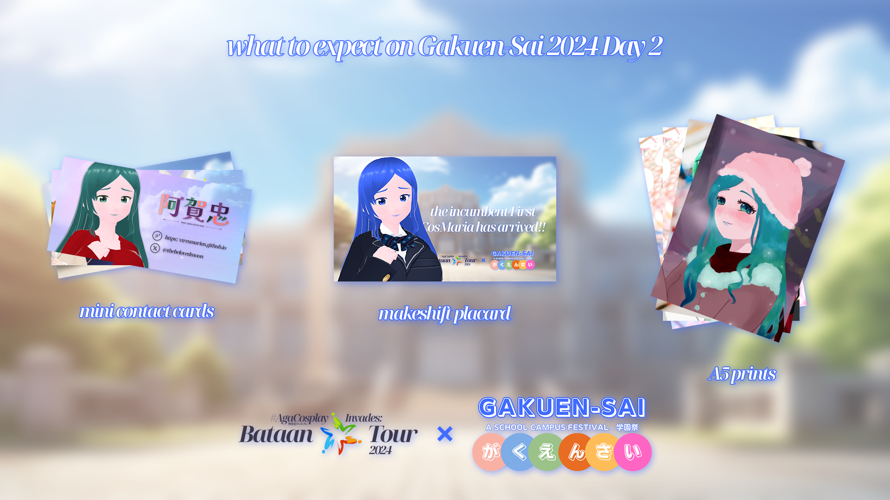 — items may be the same, but they're in fact different in some areas!!
some of the included contact cards are of the same variety as the last con -- except for the one below. I kinda made it a habit to replace the second logo with whatever con I participated in.
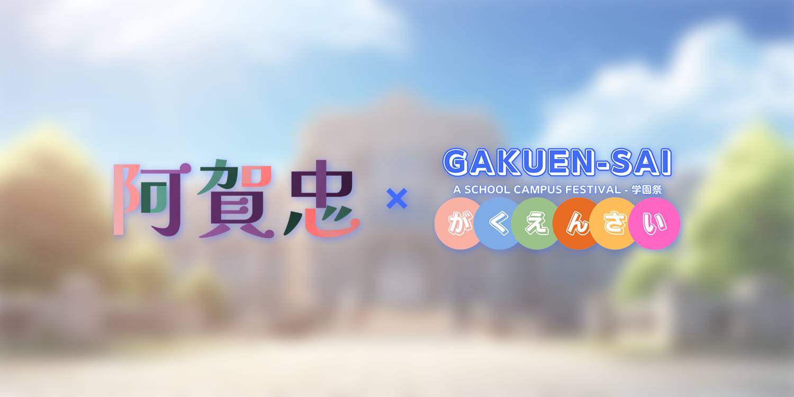 — the new contact card!!
the new placard (shown below) may be smaller than its smaller counterpart, but it sure packs the punch!! also, I've featured the Bataan Tour logo as an added bonus since the con occurred during the major event~
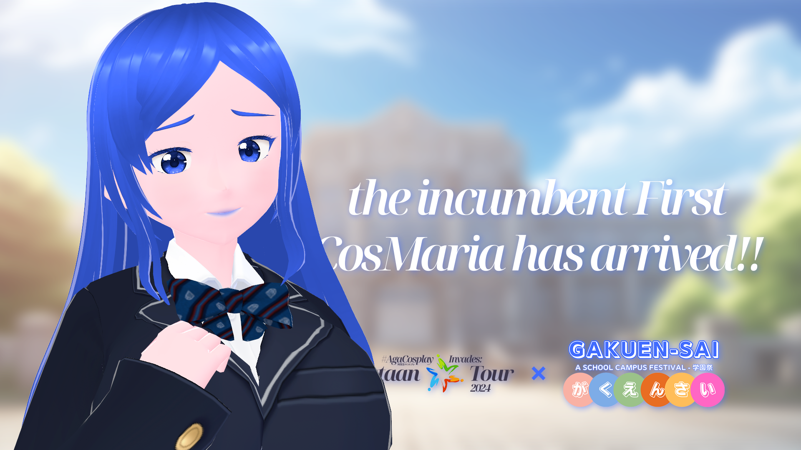 — the new placard!!
I've sent out a number of A5 prints, but below is the most exclusive as I only produced only two of them due to issues on how I printed em. BUT, they're all to be treated as exclusives anyway -- one for Shi-Shi and the other for the organizers!!
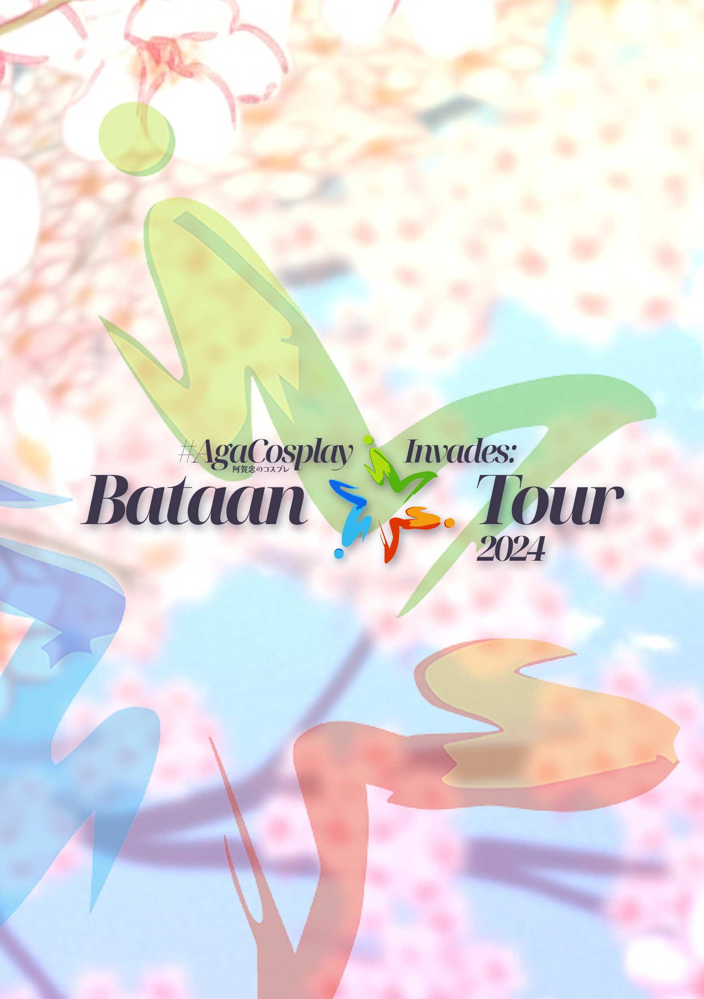 — the A5 print exclusive!!
the only major difference is that not only the A5 prints but also the contact cards will be signed on the spot!! on the last con, it's only the A5 prints that are signed..
I've recently acquired a new marker to do the job for me, which turned out quite well!!
also, the placard is also signed, albeit by fellow guest cosers; which will be brought during the post-con discussion as you read this blog.
now here comes the most significant part where I usually stick around with the fellow CosMarias!! unfortunately, Eri (the incumbent Third CosMaria) isn't with me as she might have some circumstances during my time here (and the fact that she just attended GachaFest in SM City Olongapo days before this event); but I'm still not alone during my presence!! enter Shunni and Shira, our upcoming Fourth and Sixth CosMarias!!
Shunni -- or Shuui as I call her going forward (more on that later) -- first appeared on my radar during BACon 2024, altho she wasn't really much of a significance during that time period. however, subsequent interactions had led the connection forward, starting off with the time she found me at a bus on my way home during one of my visits to SM City Bataan.
anyhow, our first meetup came on the Limay Leg of the Bataan Tour!! she's still a bit shy, but it's still nice knowing that she's getting used to this kind of interactions outside of conventions!!
anyhow, she and I met again during the event, to which she was eager to have me on board!! we mostly talked about what had happend after the Limay Leg and my ongoing circumstances, to which she was eager to help out!! she was even eager to keep our memories through pictures -- that one thing that really surprises me the most!! not just the photoshoots, but also our selfies together!! (some of the photos included in the collection were from hers.)
in exchange, I gave her the CosMaria card and the card/s of her choice, signed on spot!!
here are some of the photos as outlined below:
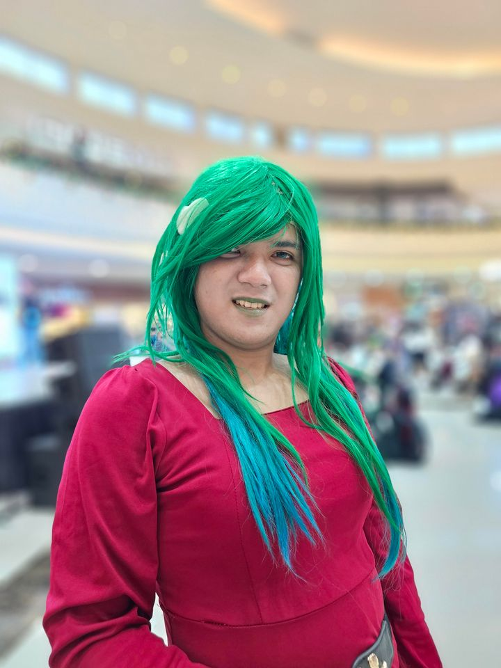 — the new cosplay visual!! (cred. Shunni, the upcoming Fourth CosMaria)
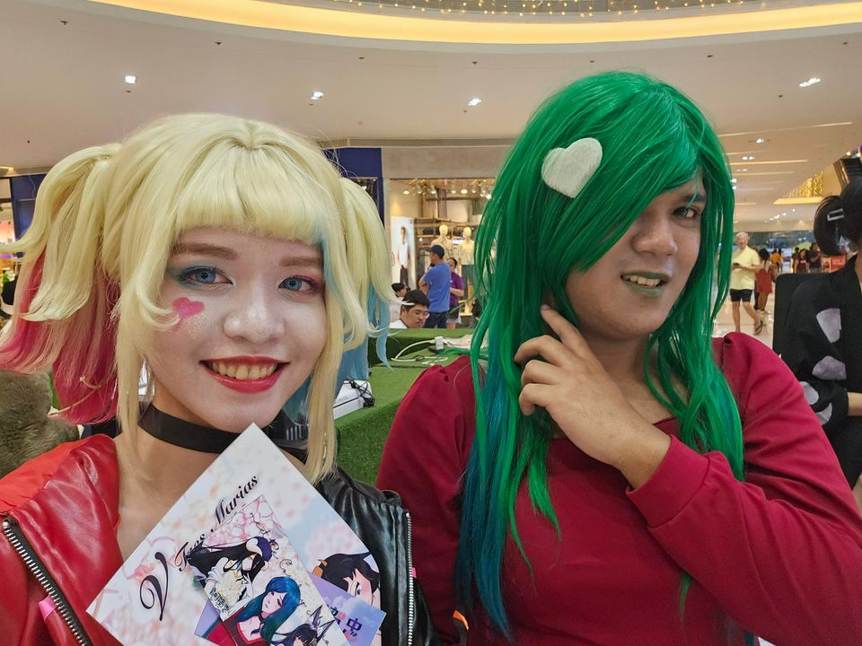 — with Shuui (as Harley Quinn from DCEU)
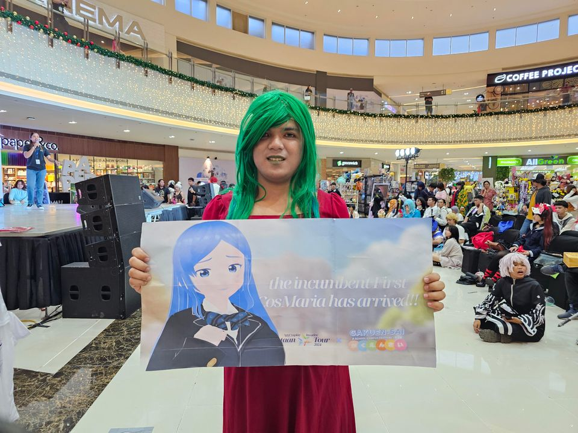 — together with the placard!!
remember in the previous paragraphs that there was the Singing Competition that's due to start when I arrived?? turns out, Shira -- aka Shi-Shi -- was one of the judges for the event!! I somehow called up to her before the event started, but decided to wait until the event finishes to which I took a look around.
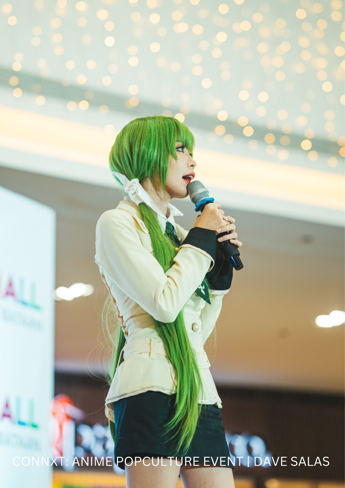 — Shi-Shi as C.C. from Code Geass!! (cred. Dave Salas for Connxt)
anyway, when the competition ended, I somehow found myself accompanying her around the venue as she asked me why I didn't attend on Day 1 -- to which I spilt the details to her firsthand. I can understand the concern in her eyes considering that I replied to her before that I would be attending on that supposed day, but can't due to circumstances as outlined at the beginning of this blog.
we somehow chatted for a while and got ourselves into some interesting conversations with some of the guest cosers around the Cosplay Avenue, to which I feel is a privilege in of itself since I wanna connect to the fellows -- one of the responsibilities as a CosMaria!! in turn, to continue our devtalks from the last con, I demoed how I ususally work on my websites like this one (cuz I have my laptop with me during the event). some of the onlookers somehow noticed the demo, to which one of them shared his experience as a dev!! it appears that my dev circle has begun to expand, one person at a time..
in addition, being alongside her led to some of the interesting instances; which some of them are surprising even for me!! take this one reel for example:
Posted by Coser Michi on Sunday, September 15, 2024
on the above reel, you can already see me at the very behind of the group, wondering what in the world was going on; with Shi-Shi beside me as she gets around her booth!!
anyhow, there are also some instances to which I was really grateful about, such as being able to have the confidence with her at my side as the Cosplay Catwalk was coming up. altho I didn't conquer the runway, atleast I was able to get the word out with the placard on hand!! I also cheered for her and her accomplices as the three of them got onto the stage -- one of them being Issaki, to which I'll discuss later.
she also stuck with me even during the breaks and after the event, to which I was grateful enough for her unwavering presence during those times!! at one point, she even offered me a slice of pizza (to which I knew came from Greenwich); which brings back memories back at BACon 2024 cuz before I formally attended the event I headed to that fastfood chain to eat some lunch.
after the event, she accompanied me (along with her other accomplices) around booths to see if there are some things that piques my interest. she even went as far as letting me pick the items (at her expense) as her gesture of saying "thank you" for the fun time during the conventions. I was kind of crying when she gifted me most of the stuff (to which I'll reveal later) and even saying that she was eager to seeing me again in the next cons to which she'll be available!!
during one of those conversations, she even mentioned that she miiight give me one of her wigs that kind of match with my existing one -- but longer. she was supposed to be carrying that before the event, but I understood the concern; both of us agreeing on the trade once we cross paths on the next con.
did you know..
Shira was the one who suggested the new nickname for Shunni?
part of rekindling with fellow cosers is the fact that I somehow try to know them just by their face and who they portray.
Issaki Murazaki -- aka Issa -- is basically that. I might not have been physically aware of her during BACon 2024, but I primarily know her for her portrayal as Bayonetta.
and how do I know this? take a look at the below screencap:
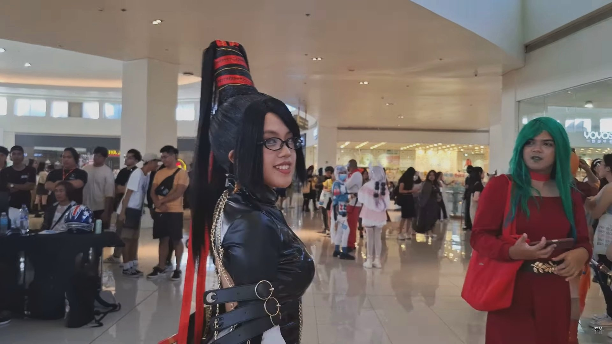 — uploader: LeMewRe FX
she and I discussed about it!! she was also surprised as I am cuz she was kind of unaware of her surroundings during the shoots that she also didn't notice me wandering around whose cosers to shoot for my photo documentation (during that period).
she kind of also admitted that it's her first time as a guest cosplayer for a convention, which adds to that surprise levels; but from what I saw she's doing just as alright as she is at current!! maybe that confidence boost from her fans eased that uncertainty, I think.
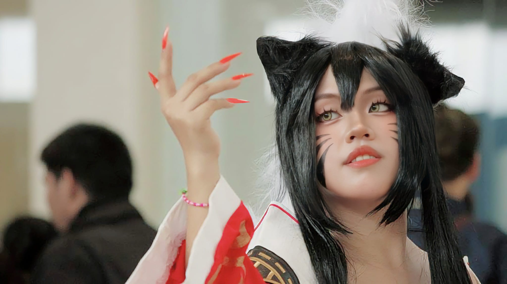 — Issa as Ahri from LoL!! (cred. Rin Thur)
now that we're done with the features, thoughts, and interactions with our fellow cosers and CosMarias, time to take a lil unwinding and reflect on what has been an almost-impossible journey back after many circumstances through the merch hauls and other stuff!!
for the record, I'm feeling more relieved knowing that despite the odds, I've done the impossible and made it in time!! in turn, I get to see more what meets the eye: guest cosers, merch, and even more memories along the way!!
and thanks to Shi-Shi, I got some of the merch as well as tokens of our continuing friendship and our ongoing commitment as CosMarias!!
here are some of them:
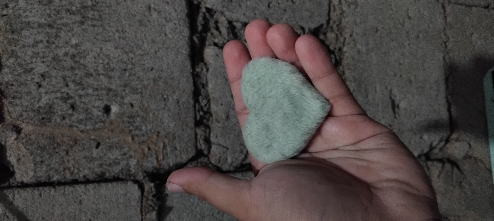 — my first hairclip!!
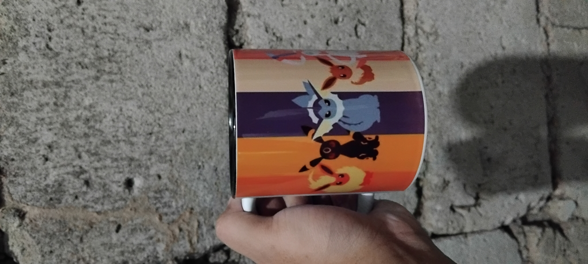 — somehow this Eevolution mug reminded me much of something that I can't say for reasons. either way, Shi-Shi wanted me to pick a mug, so I chose that one lmao
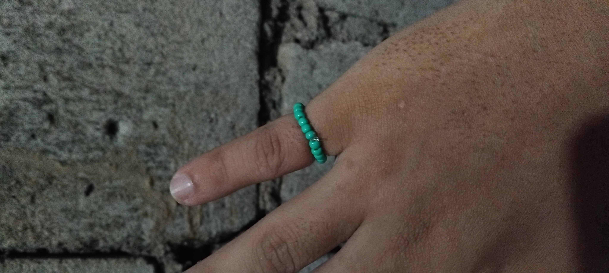 — the friendship bead!! somehow I mainly use it as a ring, but it's one of those that brought hope despite the odds!!
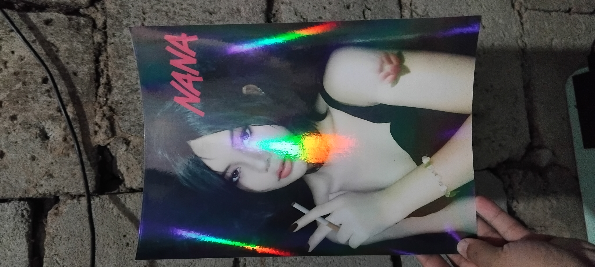 — bought this one from Nana -- whose booth was right next to Shi-Shi's!! word is she was complaining that no one bought her items, so I had to step up oqo
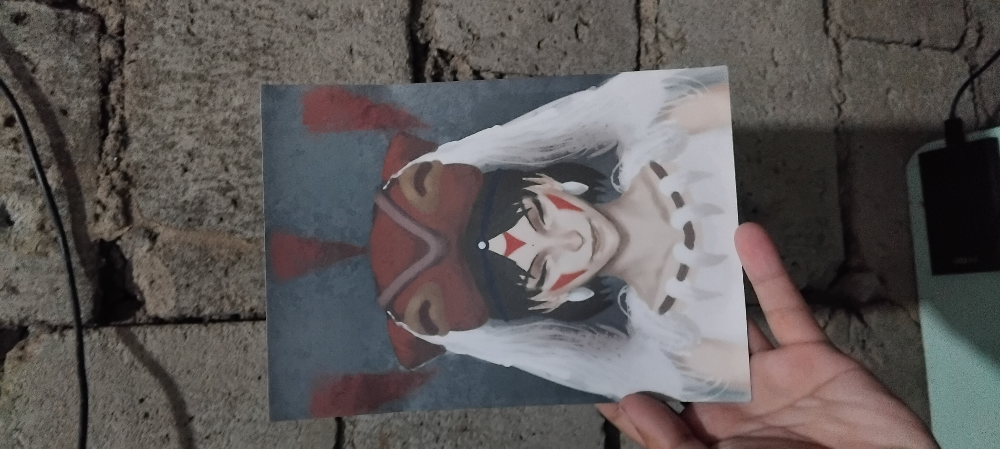 — got this as a free art from one of the booths on closing hours!! I kinda felt bad that I didn't pay for this, but whoever made this art, you deserve a treat!!
along with the hauls and me signing the cards and prints, I somehow felt privileged to showcase some autographs from our fellow guest cosers!! I would like to thank Shi-Shi, Issa, and Lia Bear for the autographs!! I will be cherishing them forever uhuhu :3
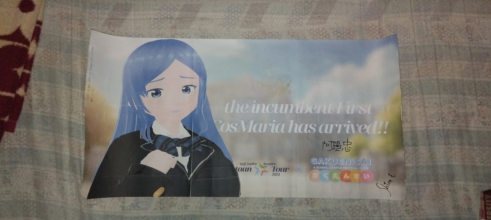 — three guest cosers signed this placard!! and also myself owo
it has been a fulfilling experience despite the odds, and I'm grateful for everything you all have done to make the event as lively as I expected!! like I said in the handwritten note -- this event has been awesome in every way possible, and I'm glad to experience it in full!!
I have made a promise to myself as a CosMaria to remain committed to my work despite the odds; and this proves that no matter what happens behind the scenes, everything can be achieved as long as we're working together to make things happen!!
expect a Letter from the First Maria🍃 with the rerelease of the Marias' website -- due on 27 Dec 2024.
are you curious about more content other than the one mentioned here?? look no further -- I've compiled all of em (including past cosplays I did) in a unified G Drive folder!! each cosplays are grouped into folders named in YYYYMMDD dateformat -- with the first attempt (and my debut as a cosplayer) being 20231230!!
you can check em out by clicking the button below:
absolutely!! you're all set to check out some of the photos I've taken and the cosplays I did -- granted that you'll be using them with intent of goodwill. everyone deserves to treat each other with positivity, and it's the First Maria🍃's job to ensure that it stays that way!!
anyway, be sure to credit me aswell if you're planning on using em!! you can use the following included in the below blockquote:
photo taken for/by Aga, the incumbent First CosMaria
check out her other ventures at https://bit.ly/AgaCosplay
if you're also planning on posting my cosplays, use the hashtag #AgaCosplay on your socials so that I can check it out in my spare time!! you can also send me the URL to your post assuming you posted em on my email at jelsa14018@gmail.com.
went through the article but still didn't understand anything? here's a quick summary to get you up to speed:
it has been a tumultuous journey this past week before the event; and despite the bad circumstances, it all ended on a good note!! I couldn't have done it more without our fellow CosMarias and other cosers to back ourselves up, and everyone who has supported the cosplay scene since day 1!!
regarding the next steps for the Bataan Tour, it might take a lil more than just planning to get things done. but rest assured the event is still going -- you can check out my Facebook for details:
until the next blogpost!! 💚🍃Aga-chuu loves you uwu💗🌸
published